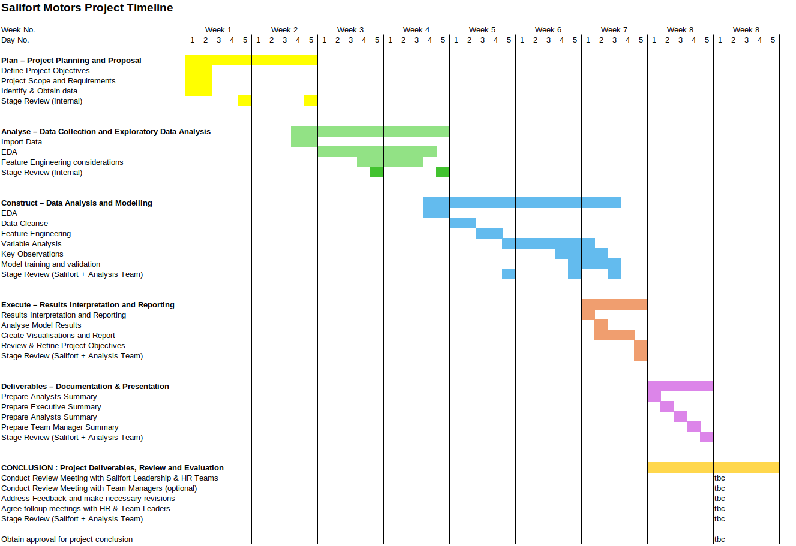

|
|
Project Home | Client Proposal | PACE Plan | Analyst’s Summary | Executive Summary | HR Summary | Team Summary |
Capstone project: Providing data-driven suggestions for HR

Client Proposal Document Client Proposal Presentation (Libre Office)
PLANNING
Timeline

Planning Tasks
Identify Stakeholders and build Communications Matrix, Stakeholder Analysis
Stakeholder Meetings
- Discuss limitations of machine learning with stakeholders
- Discuss and agree project objectives with stakeholders
- Discuss and agree project deliverables with stakeholders
- Discuss and agree project timescales with stakeholders
- Discuss and agree “What does success look like” with stakeholders
Data Tasks
- Collect & Review Data Sources
- Identify tools and models (multi model approach to identify best fit)
Analyse Data
Analyse - Tasks
- Ethics Review (transparency, accountability, fairness, privacy, security, consent, and integrity.)
- Perform Exploratory Data Analysis
- Develop descriptive variable statistics & identify any trends
Analyse - Deliverables
Jupyter Notebooks
Construct
Construct Tasks
- Define dependant and independent variables
- Build ML Models for logistical Regression, Decision Tree, Random Forest
- Record model performance
- Evaluate model performance choose best performing model
Deliverables
- Demonstration ML Model
- Model Risk Predictions on Live HR Data
Execute
Execute - Tasks
Interpret Results Create Summary of the analysis Define limitations and what can be done to improve the models (more data)
Execute - Deliverables
Executive Summary
- Executive Summary
- Recommendations
HR Summary
- Report by team on current employees
- Leave Predictions on current employees
- Interactive Demonstration ML Model
Analyst’s Summary
- Clear and Concise summary of the analysis
- Outcomes
- S.M.A.R.T Proposals
- Further Research ideas
- Working ML Model to apply to current employee Data